今天的全球科技图景，像三条悄然汇流的暗线。一条指向天空深处：NASA与IBM把数十年散落的月球观测数据，炼成了首个开源的月球智能模型，让陨石坑、水冰与火山地貌第一次有了可复用的分析工具。一条指向硅片的物理极限：三星提前为特斯拉试产AI5芯片，台积电则把1.4纳米以下先进制程重新落子龙潭，算力的底座正在被重新浇筑。还有一条藏在失重环境里：伦敦大学学院与Helogen要在轨道上造出人造骨，用微重力给骨质疏松研究按下快进键。科学、制造与生命的边界，正在同一天被悄悄推前。
把今天的新闻连起来看，会发现一个清晰的产业脉络：人工智能的竞赛，已经不再只发生在模型参数和榜单分数上，而是下沉到了电力、硅片与轨道这些更"重"的维度。
先看算力底座。Anthropic与OpenAI把部分需求转向20至30兆瓦级别的小型数据中心，本质是用更快拿到电容量来换时间；三星为特斯拉提前试产AI5芯片、台积电重返龙潭锁定1.4纳米以下制程，则说明先进封装与晶圆厂仍是这场竞赛里最硬的瓶颈。值得玩味的是，Anthropic还在旧金山湾区悄悄建了一座湿实验室——当写代码的AI开始亲手做生物实验，智能的边界就从屏幕延伸到了试管。
再看天空这条线。月球模型开源，意味着月球科学第一次有了"公共基础设施"；太空生物制造则把微重力变成一种实验条件。这两者看似遥远，底层逻辑却一致：人类正把地面上的科学工具，系统性地搬到地球之外。
文化与生命维度同样有温度。中华骨髓库非血缘捐献突破24000例，玻利维亚丛林里一百多年来首次确认猫科新物种，上召窑秦陵把战国晚期的墓葬实锤到"秦王级别"——科技向前冲的时候，人文与生命的故事也在静静积累。今日的格局，不是某一项突破压倒一切，而是多条线索同时向前，彼此并不喧哗，却都在重塑我们理解世界的方式。
NASA与IBM研究院联合发布并开源了首个月球智能模型，模型权重与代码向全球研究者开放。这套工具把数十年来分散的月球观测数据，转化为可用于陨石坑测绘、火山地貌识别和极区水冰潜力评估的分析能力。
观此：月球探测过去最大的痛点，不是没数据，而是数据散落在不同任务、不同格式里，难以被重复使用。开源模型相当于给月球科学装上了"公共操作系统"，任何团队都能下载、微调、做自己的研究。它不直接送人登月，却把登月之后"怎么读懂月球"的门槛大幅降低了。
中国首个面向海洋产业的专属智能要素供给平台"海洋Token（词元）工厂"正式发布并落地青岛，整体架构包含数据、算力、算法三部分，规划深度贯穿深海油气勘探等实战场景。
观此：把"词元工厂"这个概念从通用大模型搬到海洋产业，意味着行业智能开始从通用走向专用。深海勘探长期受限于数据孤岛与算力分散，一个垂直平台若能把这些要素打通，价值不在炫技，而在让油气、渔业、环境监测等领域真正用得起AI。这是产业智能化下沉到具体行业的一个信号。
Anthropic与OpenAI正把部分算力需求转向20至30兆瓦级别的数据中心以更快获得容量；另有消息称Anthropic在旧金山湾区低调建立湿实验室，把AI业务延伸到需要动手操作的生物学与药物科学研究。
观此：大模型公司的瓶颈正在从"算法谁更强"转向"电从哪来、实验台在哪"。小型数据中心是绕开大园区排队的电容量捷径；而自建湿实验室，则显示头部AI公司不愿只停在软件层——它们想亲自验证AI设计出的分子是否真能在试管里成立。智能的下一站，是真实的物理世界。
三星电子已在美国得州泰勒代工厂开始原型生产，向特斯拉提供AI5芯片。因大型科技公司对AI芯片需求激增，三星提前了原型产量以启动良率验证，计划年底完成大规模生产验证，明年全面供应。
观此：AI芯片的稀缺，已经让车企直接卷入先进制程争夺。特斯拉把自动驾驶的算力命脉交给三星试产，说明端侧智能的较量本质是晶圆厂产能的较量。提前试产是为了抢良率窗口——在半导体里，早三个月验证，可能就意味着早半年量产。
供应链透露台积电决定重返龙潭设厂，龙科三期优先锁定1.4纳米（A14）以下先进制程，初步规划三座晶圆厂，首座目标2030年前后完工并进入量产准备，整体投资估计超1兆元新台币。
观此：当外界还在消化3纳米、2纳米的量产节奏，龙头已把目光投到1.4纳米以下。这张时间表传递的信号是：先进制程的物理极限虽然逼近，但产业迭代的节奏并未放缓。重返龙潭，也是把人才、供应链与地缘因素一起重新算进产能布局里。
华为云CEO周跃峰表示，灵衢昇腾950智算集群云服务将于9月30日面向国内市场商用，11月30日面向全球市场商用。该集群服务定位为大规模训推一体的算力底座。
观此：国产智算集群走向公开商用，意味着大模型训练的算力供给多了一个本土选项。对国内AI应用开发者而言，关键不只是峰值算力，而是集群稳定性与生态适配能否撑住长周期训练。9月与11月两个时间节点，是国内与全球市场分别交卷的时刻。
智谱正式发布GLM-5.3-FlashX，API同步全面开放。新版本推理速度最高可达200 tokens/s，较现有GLM-5.3-Flash提升5倍，定价提升至原版本的2.5倍。
观此：大模型竞争正在分出两条赛道——一条拼能力上限，一条拼性价比与速度。FlashX把推理速度拉高五倍，指向的是海量调用场景：客服、摘要、实时交互。当速度成为卖点，说明行业重心正从"能不能做"转向"能不能便宜地大规模做"。
人形机器人公司Figure推出其称"最先进"的神经网络模型Helix 2.5，机器人无需额外训练即可实现零样本全身自主做家务，能把对物理世界的理解从一个环节迁移到另一个环境，实时适应动态变化。
观此：具身智能的难点一直在于"换个环境就傻"。Helix 2.5宣称的零样本迁移，若属实，意味着机器人开始具备某种通用的身体常识——不是为某件事编程，而是理解"物体、空间、动作"之间的关系。离走进家庭还很远，但方向比单次演示更重要。
马斯克旗下SpaceX据报道拟斥资600亿美元收购AI编程工具Cursor，以掌控AI编程赛道，科技企业对AI应用层的争夺进一步加剧。
观此：当火箭公司去收购编程工具，看的不是代码编辑器本身，而是"谁定义下一代软件的书写方式"。AI编程是自然语言变成产品的关键入口，抢占它，等于抢占未来工程师的工作流。这笔传闻背后，是巨头对应用层话语权的焦虑。
九识落地国内首个L4万卡算力集群，自动驾驶大规模仿真时代到来，海量场景仿真能力将成为智能驾驶研发迭代的关键基础设施。
观此：自动驾驶的进步越来越依赖"在虚拟里跑够里程"。万卡集群的意义，是把真实路测难以覆盖的长尾场景，用仿真批量生产出来。当仿真成为研发底座，车辆迭代速度将不再只受实车排期限制，而受算力规模限制。
栖息于玻利维亚丛林的一种野猫被证实为先前未知的新物种，属于虎猫属。这是100多年来人类首次发现现存的猫科动物新物种。
观此：在物种灭绝新闻频发的今天，发现一个全新的猫科成员格外珍贵。它提醒我们，地球生物清单远未写完，尤其热带丛林这类采样不足的区域。新物种的发现往往也意味着一片尚未被保护的栖息地进入视野——分类学本身就是保护的前哨。
Helogen与伦敦大学学院合作，将在轨道上制造"BIO-BONE"人造骨模型，研究微重力对骨重塑的影响，为未来骨质疏松治疗积累数据。一项30天任务预计能生成地球上约需三年才能收集的数据。
观此：骨骼在地球上时刻承受重力加载，微重力则把这个"开关"关掉，恰好放大了衰老与疾病中的骨流失过程。把实验搬上轨道，等于给研究者造了一台天然加速器。太空制造听起来科幻，落脚点却是地面上无数人的骨骼健康。
中华骨髓库非血缘造血干细胞捐献突破24000例，在库志愿捐献者数据接近379万人份。首例捐献到第10000例历时20余年，而第23000例到第24000例仅用112天。
观此：后一半的一万例用的时间远少于前一半，曲线本身说明公众参与生命接力的意愿在加速。造血干细胞的配型极其看概率，库容越大，陌生人间配型成功的机会就越高。这串数字背后，是越来越多素不相识的人愿意为另一个生命按下"同意"。
工信部等十部门联合印发《医药工业发展"十五五"规划》，提出到2030年规模以上医药工业企业营收超3.5万亿元，首创新药占全球比例达25%以上，创新药产业规模年均增速20%以上。
观此：把"首创新药占比"写进国家规划指标，说明医药产业的评价标尺正从"仿制规模"转向"源头创新"。20%的年均增速目标不低，真正考验在后端——从实验室分子到可及药品之间，还有临床、审批与支付的整条链路要协同。规划定方向，落地看生态。
农业农村部、工信部印发《全国农业机械化发展"十五五"规划》，到2030年农作物耕种收综合机械化率超80%，人工智能、新能源等新技术新装备在农业机械化领域广泛应用。
观此：农业机械化的下一程，关键词是"智能"与"绿色"。当AI调度和新能源动力进入农机，提升的不只是效率，还有对劳动力短缺与碳排放的双重缓解。80%的机械化率目标，意味着农业生产方式将整体从经验驱动转向数据驱动。
文旅部发布《文化产业发展"十五五"规划》，要求提升产业供给效能，强化科技创新赋能，探索文化和科技深度融合的有效路径，促进消费提质升级，挖掘文化消费潜力。
观此：文化产业的增量，越来越来自"科技+内容"的化学反应——沉浸式展演、数字文博、AI辅助创作都在改写文化产品的形态。规划把科技赋能单列，说明文化不再只是内容本身，而是与新技术耦合的新供给。文化消费的盘子，取决于能不能把传统讲出新体验。
文旅部等十部门出台促进房车消费新措施，这是国家层面首次针对房车全产业链系统部署。文件围绕产品制造、登记管理、交通通行等九大方向施策，破解标准不完善、通行停靠不便等痛点。
观此：房车在中国长期是小众、粗放的玩法，痛点集中在"能不能合法上路、停在哪"。国家层面细则入局，意味着把这个市场从爱好者圈层推向标准化大众消费。它撬动的不仅是整车销售，还有营地、文旅与周末经济的连带需求。
陕西省考古研究院公布上召窑秦陵考古成果，这座位于咸阳市渭城区的墓葬确认为战国晚期秦王级别的墓葬，专家推测墓主可能是秦国华阳太后。
观此：一座墓葬的级别判定，能补全一段政治亲属关系的拼图。若墓主确为华阳太后，便把文献里模糊的秦国王室脉络，落到了具体的空间与器物上。考古的魅力正在于此——它让史书里几行字，变成可以丈量的真实存在。
央视联合全国博物馆推出文博科普产品《文博日历》。其中黄褐釉芦雁图虎形枕，是古人夏日纳凉用的瓷质凉枕，枕面绘秋日芦雁图，"雁衔芦"谐音"衔禄"，寄托古人对福禄寿的向往。
观此：一件瓷枕能讲出两层故事：一是宋金时期的生活美学，二是器物上的吉祥暗语。古人在日用之物上安放愿望，枕面芦雁不只是装饰，更是"鸿雁传情、芦苇安居"的软表达。文博科普的价值，正在于把这种细节重新递回今天的生活。
诺贝尔基金会决定，2026年每项诺贝尔奖奖金增加100万瑞典克朗，达到1200万瑞典克朗（约合815万元人民币）。
观此：奖金上调看似是数字变化，背后是基金会投资规模的支撑与对科学人文价值的再确认。在科研成本攀升的当下，这笔钱既是荣誉的象征，也实打实地缓解获奖者后续研究的资源压力。它传递的态度很朴素：人类仍愿意为最顶尖的智慧付高价。
01
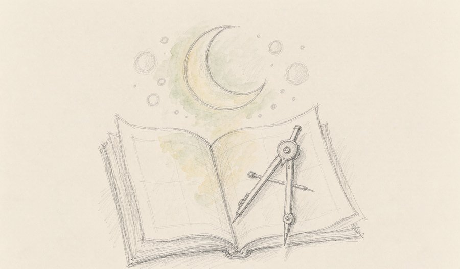
来源：媒体综合
02
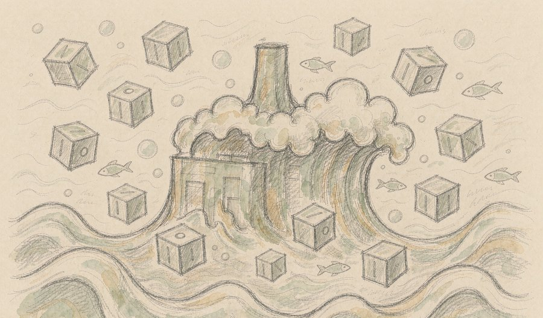
来源：媒体综合
03
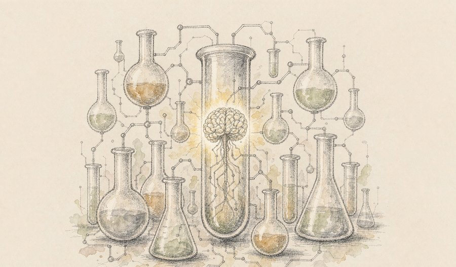
来源：媒体综合
04
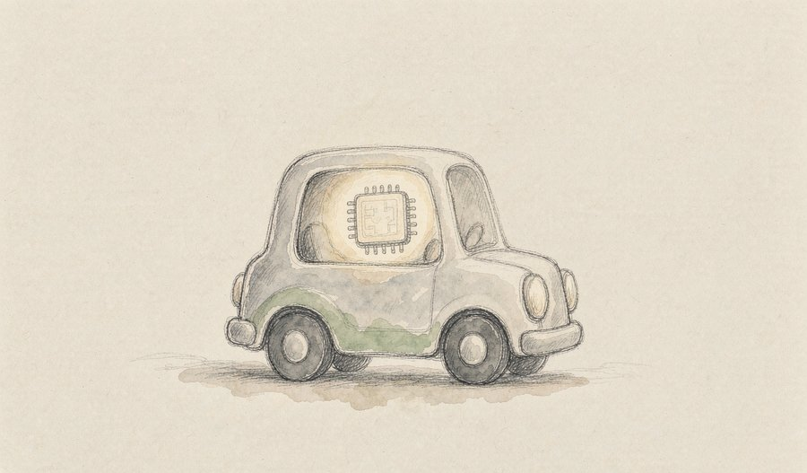
来源：媒体综合
05
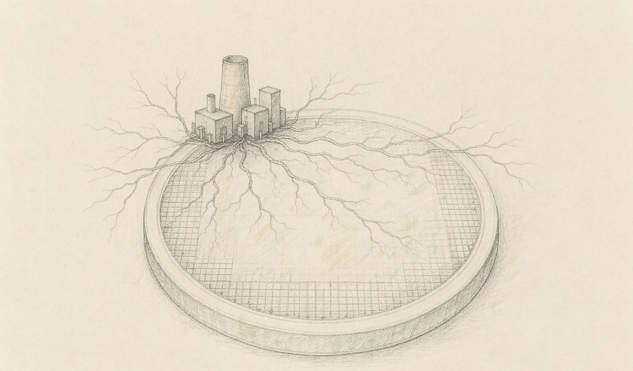
来源：媒体综合
06
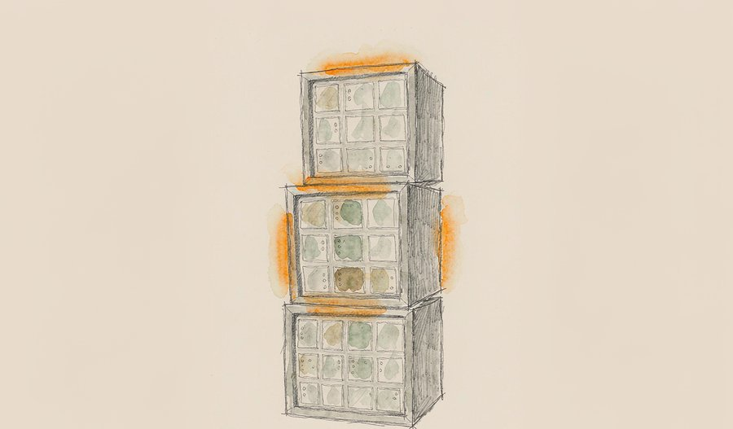
来源：媒体综合
07
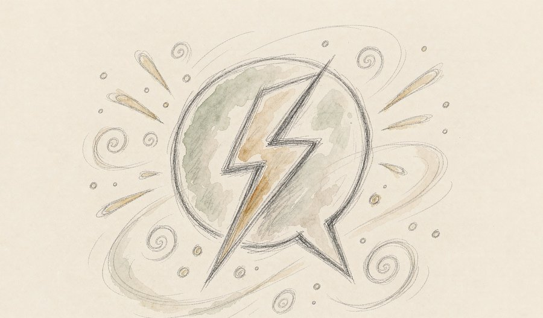
来源：网易
08
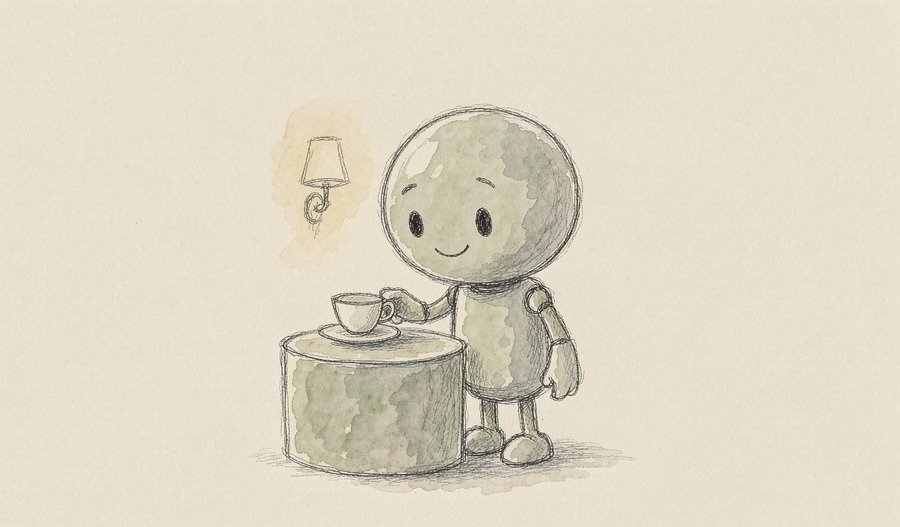
来源：网易
09
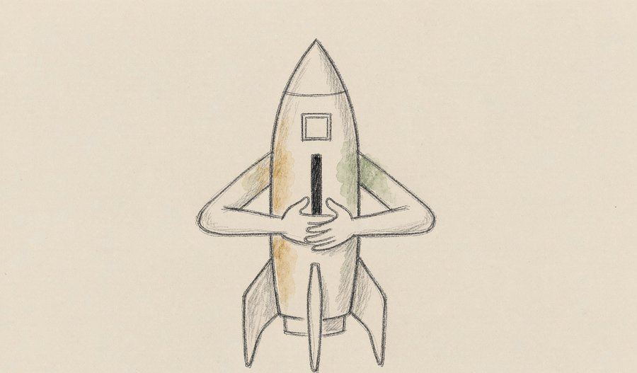
来源：网易
10
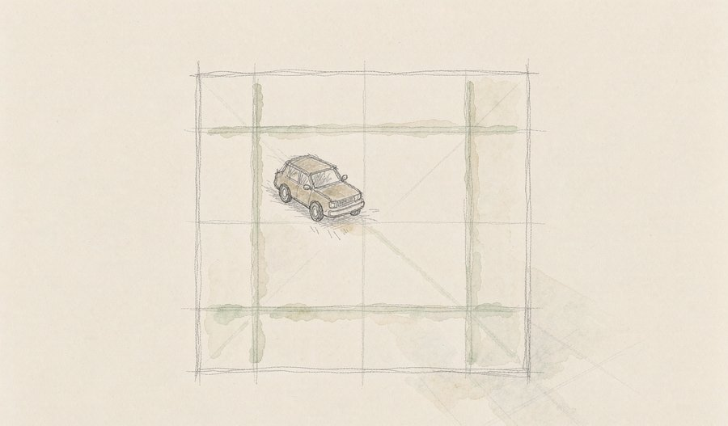
来源：网易
11
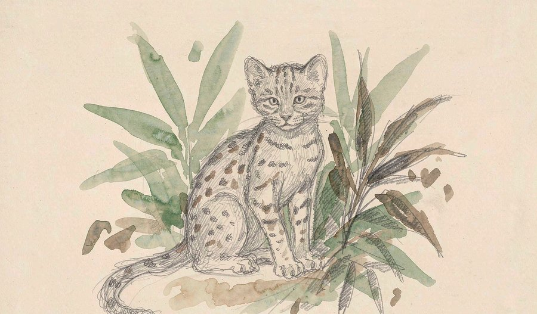
来源：新浪
12
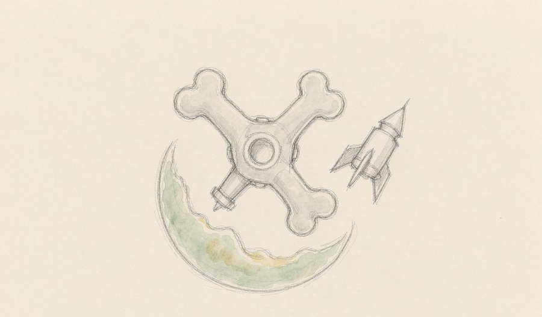
13
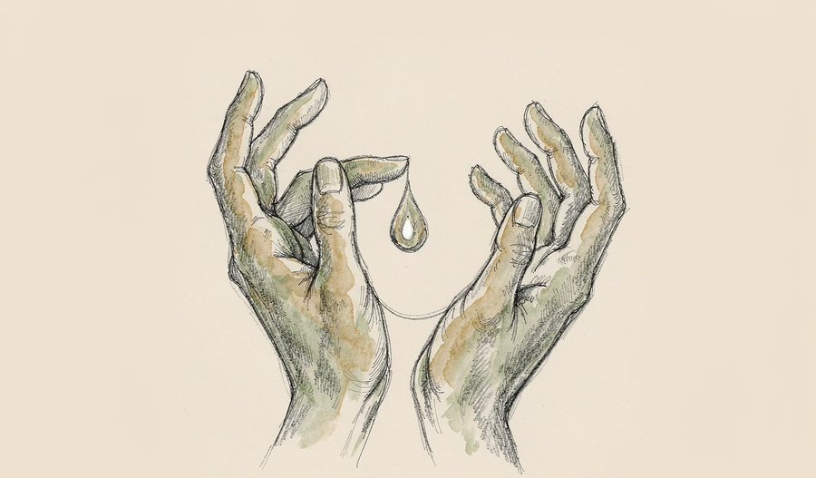
来源：新浪
14
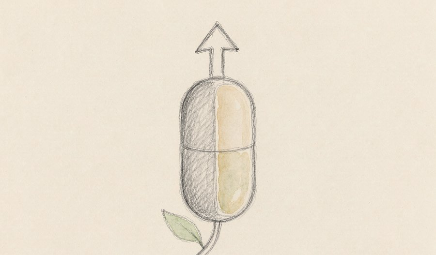
来源：媒体综合
15
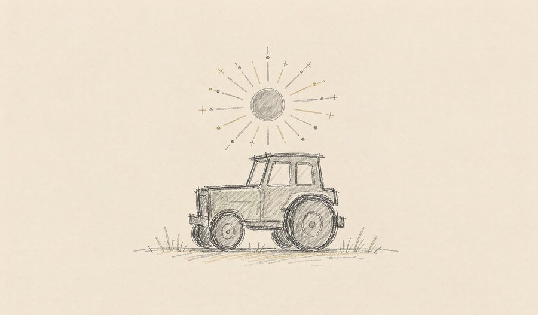
来源：媒体综合
16
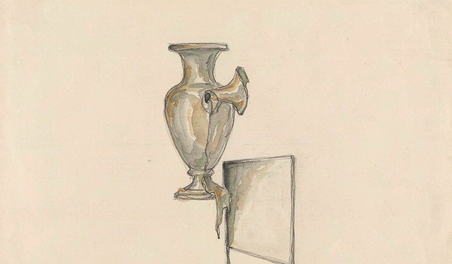
来源：媒体综合
17
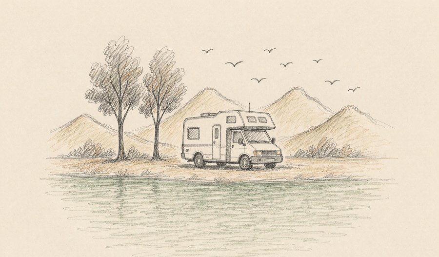
来源：媒体综合
18
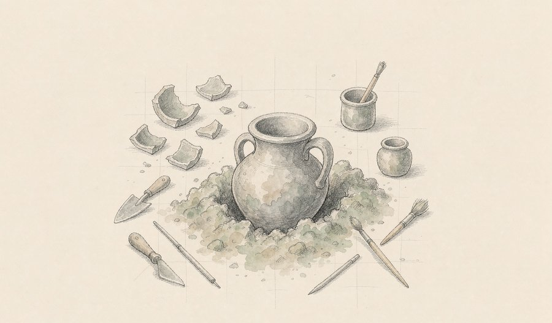
来源：新浪
19
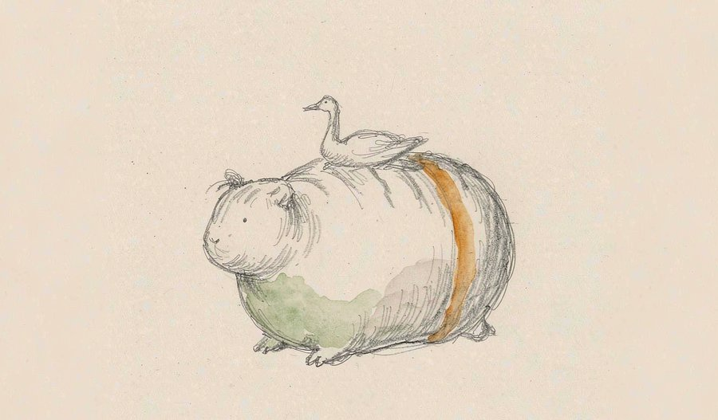
来源：新浪
20
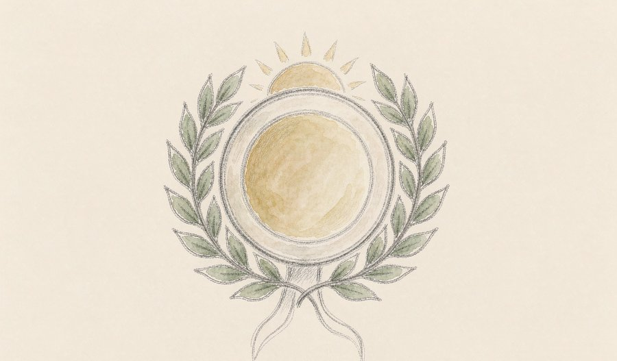
来源：新浪
今天的精选格局，是三条暗线同时向前而彼此不喧哗。算力线里，从开源月球模型到三星、台积电把硅片推向更细的纳米尺度，智能的底座正被重新浇筑；生命线里，太空造骨与中华骨髓库的两万四千例，把研究的尺度从轨道拉回人间疾苦；人文线里，秦陵墓葬与虎形枕提醒我们，科技狂奔时文明的根脉仍在静静生长。没有哪一项压倒一切，却都在悄悄改写我们理解世界的方式。
本文插画由 AI 辅助绘制。